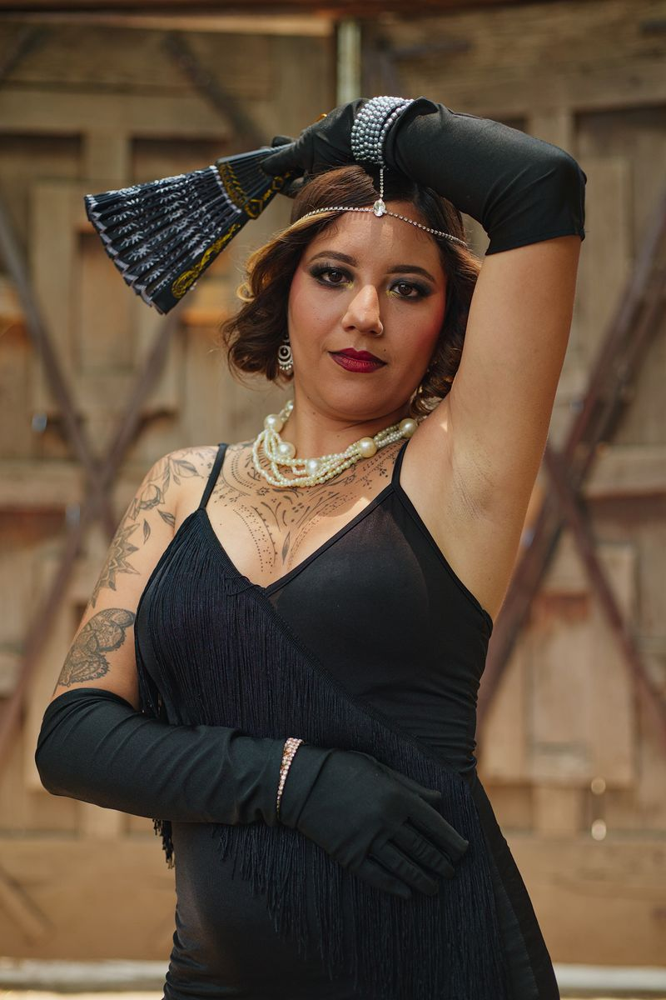

Eight courses, one table. Some go to a couple, some to one person. Take the oath on one and nobody brings the same thing twice.
Not optional
Dress the part
Dark suits, sharp collars, a tie you can loosen by eleven. Black dresses, red lips, gold that catches the candlelight. Nothing costume-shop about it: the look is a family that owns one very good outfit each and wears it to dinner. If you own a hat, this is the night for it.

Jacky keeps the full board: Italian Mafia Attire (mandatory)
Already handled
Decorations and setup are covered. Tablecloth, candles, a few small touches. One of the main dishes is covered too.
— the house